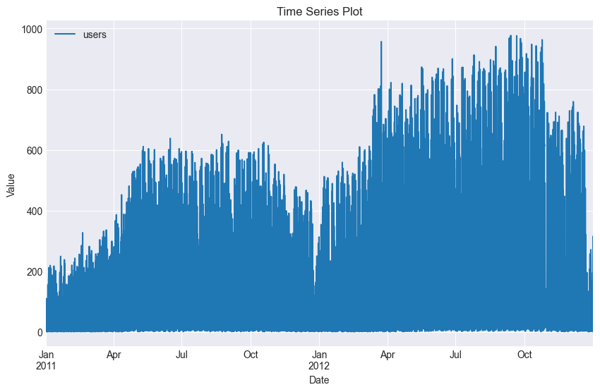
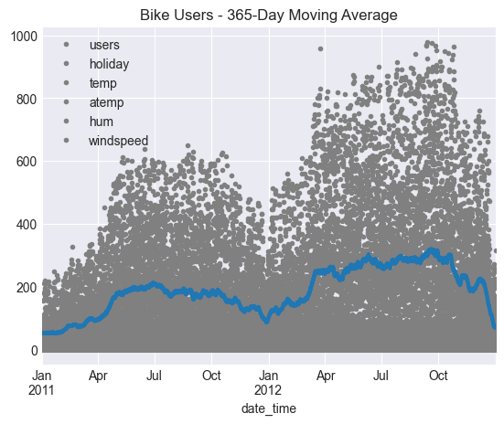
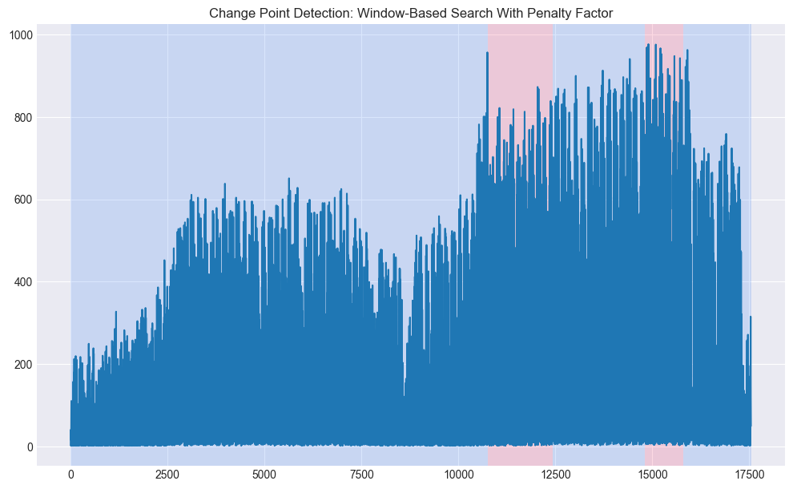
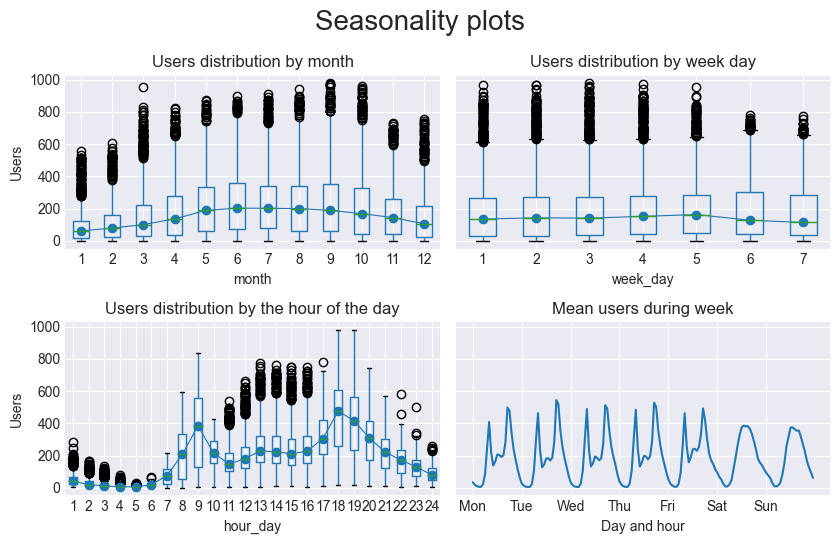

01: Exploratory Time Series Analysis#
Index:
Structural assessment of time series (ruptures package)
Analysis and segmentation of non-stationary signals. Implemented algorithms include exact and approximate detection for various parametric and non-parametric models
The purpose is to find points in space (if they exist) where the structure of the signal breaks and assumes a different behavior usually due to an exogenous variable
Visualize Moving Average and Autoregressive Components
Visualize the behavior of the time series with dispersion and distribution analysis across days of the week and months of the year
---------------------------------------------------------------------------
ModuleNotFoundError Traceback (most recent call last)
Cell In[1], line 2
1 import pandas as pd
----> 2 from skforecast.datasets import fetch_dataset
3 import matplotlib.pyplot as plt
4 from statsmodels.graphics.tsaplots import plot_acf
ModuleNotFoundError: No module named 'skforecast'

Moving average (365 days)#
<Axes: title={'center': 'Bike Users - 365-Day Moving Average'}, xlabel='date_time'>

Text(0.5, 1.0, 'Change Point Detection: Window-Based Search With Penalty Factor')

Seasonality plots#
